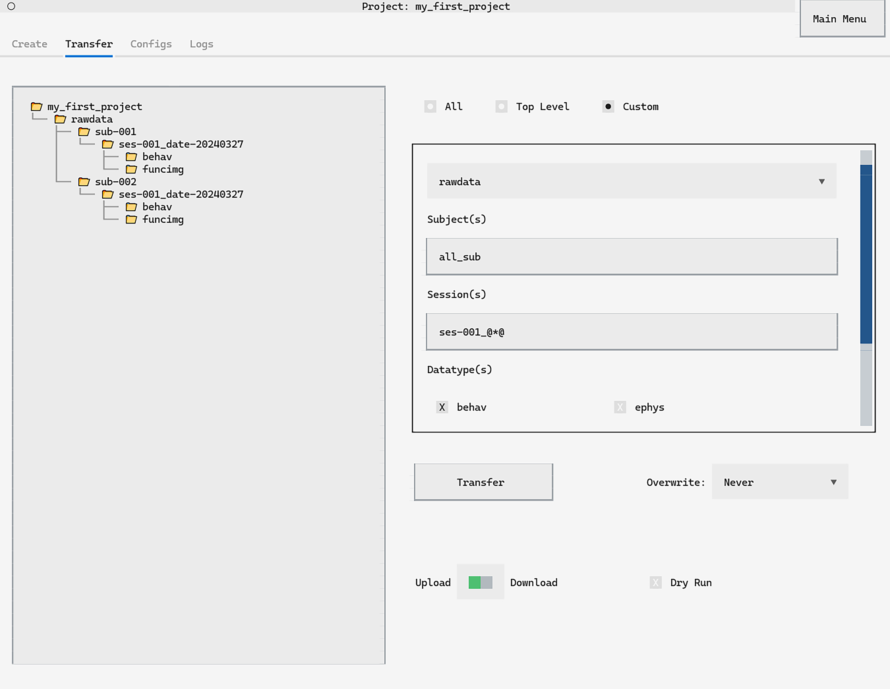
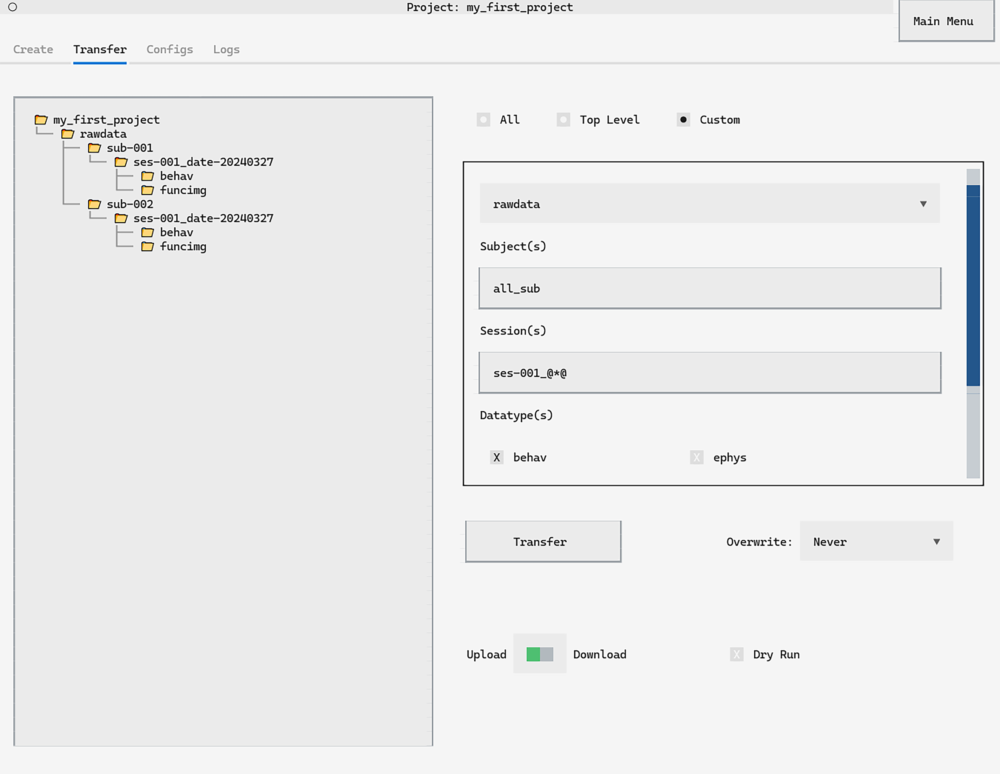

How to Transfer Data#
Transferring data between the local project and the project located on central storage is a key feature of datashuttle. It allows:
Transfer of data from an acquisition machine to the central project.
Convenient integration of data collected from multiple acquisition.
Pulling subsets of data from central storage to analysis machines.


Transfer Direction
In datashuttle, the term upload refers to transfer from the local machine to central storage. Download refers to transfer from central storage to a local machine.
There are three main methods to transfer data in datashuttle. These allow transfer between:
The entire project (all files in both
rawdataandderivatives)A specific top-level-folder (e.g. all files in
rawdata)A custom subset of subjects / sessions / datatypes.
Below we will explore each method in turn, as well as consider configuring transfer including the important overwrite existing files option.
Warning
The
Overwrite Existing Files
setting is very important.
By default it is turned off and a transfer will never overwrite a file that already exists, even if the source version is newer.
Transfer the entire project#
The first option is to transfer the entire project,
that is all files in the rawdata and derivatives
top-level-folders.
This includes all files inside or outside a subject, session or datatype folder.
This mode is useful for data acquisition when overwrite existing files is off. Any new files (i.e. newly acquired data) will be transferred, to central storage, while any existing files will be ignored.


To transfer the entire project navitgate to the Transfer tab. The All` button indicates to transfer the entire project.
Use the Upload / Download switch to control transfer direction,
and press Transfer to begin.
The command to upload the entire project is
project.upload_entire_project()
while the command to download the entire project is
project.download_entire_project()
Transfer the top-level folder#
This mode acts almost identically to
transferring the entire project
however it will only transfer files within a
particular top-level folder (rawdata or derivatives).
This mode is also useful for quickly uploading new files
during data acquisition (rawdata) or analysis (derivatves), when
overwrite existing files is off—any newly acquired or generated files
will be transfer, ignoring any previously existing files.


Selecting the Top-Level button on the Transfer tab will
allow selection of rawdata or derivatives to transfer.
Use the Upload / Download switch to control transfer direction,
and press Transfer to begin.
The upload_all() or download_all() methods can be used with the argument top_level_folder to specify
the top-level folder to transfer within.
In the next example, we will upload rawdata downloading derivatives.
project.upload_all("rawdata")
project.download_all("derivatives")
Custom transfers#
Custom transfers permit full customisation of the files inside or outside of subject, session and datatype folders.
Custom transfers are particularly useful during data analysis, in which a subset of data can be downloaded from central storage. For example, you want to only transfer behavioural data from test sessions—custom transfers allow you to do this with ease.
See below for how to run custom transfers, as well as certain keywords and convenience tags to fully customise data transfer.
For example, all_sub in the below examples tells datashuttle
to consider only files and folders within subject folders for transfer.
Files or folders within rawdata that are not sub-
folders will not be transferred.
See below for full details on custom transfer keywords and convenience tags.
 

{kind=link}
Select Custom on the Transfer tab to select custom transfers.
The top-level folder can be set by the first dropdown menu.
Next, subject and session keywords can be added to customise files to transfer. In this example, data from all subject folders, all first session behavioral data will be transferred.
Subject and sessions can be added to the input boxes automatically
by hovering over sub- or ses- folders on the DirectoryTree.
Pressing CTRL+F will ‘fill’ the input with the foldername,
while CTRL+A will ‘append’ the foldername, creating a list of
subjects or sessions to transfer.
Use the Upload / Download switch to control transfer direction,
and press Transfer to begin.


The upload() and download() methods can be used for custom
data transfers. For example, to perform a custom upload:
project.upload(
top_level_folder="rawdata",
sub_names="all_sub",
ses_names="ses-001_@*@",
datatype="behav",
)
In this example, data from all subject folders, all first session behavioral data will be uploaded.
Custom transfer keywords#
Custom transfer keywords determine how files and folders outside of subject, session and datatype folders are handled.
Ideally, all data will be stored in datatype folders. However, this is not always feasible.
In this case, custom transfer keywords allows flexible handling of
the transfer of non sub-, ses- prefixed or datatype folders at the
subject, session and datatype level.
- Subject level
all- All subject (i.e. prefixed withsub-) folders and non-subject files within the top-level folder will be transferred.all_sub- Subject folders only and them will be transferred.all_non_sub- All files and folders that are not prefixed withsub-, within the top-level folder, will be transferred. Any folders prefixed withsub-at this level will not be transferred.
- Session Level
all: All session and non-session files and folders within a subject level folder (e.g.sub-001) will be transferred.all_ses: Session* folders only (i.e. prefixed withses-) and everything within them will be transferred.all_non_ses: All files and folders that are not prefixed withses-, within a subject folder, will be transferred. Any folders prefixed withses-will not be transferred.
- Datatype Level:
all: All datatype folders at the subject or session folder level will be transferred, as well as all files and folders within selected session folders.all_datatype: All datatype folders (e.g.behav,ephys,funcimg,anat) within a session folder will be transferred. Non-datatype folders at the session level will not be transferredall_non_datatype: Non-datatype folders within session folders only will be transferred
Configuring data transfer#
!! overview
!! link to configs